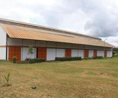

Campus numérique · septembre 2026
Guide du gestionnaire de salle
La salle de conférence, pas à pas.
Installer l'écran de votre salle, préparer chaque cours, compter les présents, et découvrir tout le campus numérique. Aucune connaissance technique n'est nécessaire.
- Riviera
- Yopougon
- Yamoussoukro
- Azaguié

M'Batto
Conception et développementJosé KouadioConcepteur et développeur du campus

Réalisé parMarkel TechnologyAgence Markel-Tech Inc.
Adressecampus.2iae.comGroupe Écoles 2IAE International
Bienvenue
Votre salle relie les étudiants au formateur.
Votre rôle en une phrase
Le formateur donne son cours en direct, depuis Nice, Toronto ou Abidjan. Vos étudiants le suivent sur le grand écran de votre salle. Vous veillez à ce que l'écran soit allumé, le son audible et les présences comptées. Le campus fait le reste tout seul.
- 1Ce qu'il faut dans la salleLe matériel, en six pointsp. 3
- 2Installer l'écran de la salleUn lien ou un code, permanentsp. 4
- 3L'écran, jour après jourCe qu'il affiche tout seulp. 5
- 4Le jour du coursAvant, pendant, plein écran, discussion, groupesp. 6
- 5Les présencesLe QR code et le code à 4 chiffresp. 9
- 6En cas de souciLes réponses aux problèmes courantsp. 10
- 7Visite guidée du campusLe site, l'espace étudiant, le Studio, le pilotagep. 11
- 8L'aide-mémoire à afficherUne page à imprimer, près de l'écranp. 17
Campus numérique 2IAE · campus.2iae.comGuide du gestionnaire de salle · 2
1 · Avant tout
Ce qu'il faut dans la salle.
Tout se passe dans le navigateur Chrome, sur l'ordinateur de la salle. Rien à installer, aucun logiciel à acheter.
Un ordinateur
Portable ou fixe, avec le navigateur Chrome à jour. Il reste dans la salle.
Un grand écran
Téléviseur ou vidéoprojecteur, branché à l'ordinateur (câble HDMI).
Des enceintes
Pour que toute la salle entende le formateur, jusqu'au fond.
Un micro et une webcam
Pour que la salle prenne la parole et que le formateur la voie.
Internet
Fibre, ou box 4G. Comptez 5 Mbit/s pour une image nette.
Du courant
Ordinateur branché sur secteur, et mise en veille désactivée.
Les branchements
Webcam et microPosés face à la salle, branchés en USB
USB
L'ordinateurChrome ouvert sur campus.2iae.com/salle
HDMI
Le grand écranEt ses enceintes, ou celles de l'ordinateur
Bon à savoir
Le campus empêche lui-même l'écran de s'éteindre pendant qu'il est ouvert. Réglez tout de même l'ordinateur pour qu'il ne se mette jamais en veille quand il est branché.
L'essai, une minute
Une fois l'écran installé, ouvrez campus.2iae.com/visio/essai : micro, son et navigateur sont vérifiés, avant le premier cours.
Campus numérique 2IAE · campus.2iae.comGuide du gestionnaire de salle · 3
2 · Sur l'ordinateur de la salle
Installer l'écran de la salle.
La direction vous remet la carte confidentielle de votre salle (fichier « Accès des salles », ou un message WhatsApp) avec une adresse et un code. Ce code crée le compte de votre salle sur l'ordinateur : il n'y a ni identifiant ni mot de passe à retenir.
- 1
Ouvrez Chrome sur l'ordinateur de la salle
Tapez l'adresse campus.2iae.com/ecran dans la barre du haut, puis la touche Entrée.
- 2
Tapez le code de votre carte
8 lettres et chiffres, sans espace. Il n'y a ni 0, ni O, ni 1, ni I, ni L : aucune confusion possible. L'écran s'installe dès le dernier caractère.
- 3
« Écran installé » : c'est fait
Le nom de votre campus s'affiche, puis l'écran de la salle apparaît. Laissez cette page ouverte.
campus.2iae.com/ecran

campus.2iae.com/ecran

Encore plus simple
Si WhatsApp est ouvert sur l'ordinateur de la salle, touchez le lien reçu dans le message de la direction : l'écran s'installe sans rien taper.
Un lien permanent
Le lien et le code de la salle restent valables : ils réinstallent l'écran sur un nouvel ordinateur, autant de fois que nécessaire. Gardez-les pour vous.
Campus numérique 2IAE · campus.2iae.comGuide du gestionnaire de salle · 4
3 · Au quotidien
L'écran, jour après jour.
Une fois installé, l'ordinateur reste connecté plusieurs mois. Chaque matin, allumez-le, ouvrez Chrome : l'écran de la salle revient tout seul.
campus.2iae.com/salle

L'écran de Yopougon, la veille d'un cours : compte à rebours, formateur, carte des cinq campus.
Pas de cours aujourd'hui
L'écran annonce le prochain cours et s'allumera tout seul le moment venu.
Un cours aujourd'hui
Compte à rebours géant, nom du formateur, heure de début à Abidjan.
Plein écran
Touche F11 ou le bouton en haut à droite : l'écran occupe tout le téléviseur.
Si l'écran demande un code
L'ordinateur a été déconnecté (navigateur réinitialisé, autre ordinateur). Rouvrez le lien de la salle, ou campus.2iae.com/ecran avec le code de la salle : ils restent valables.
Campus numérique 2IAE · campus.2iae.comGuide du gestionnaire de salle · 5
4 · Le jour du cours
Avant le cours, heure par heure.
- 1
1 H AVANT
Allumez tout
Ordinateur, écran, enceintes, micro. Le code de présence apparaît à l'écran.
- 2
30 MIN AVANT
Accueillez les étudiants
Chacun scanne le QR code de l'écran avec son téléphone : il est compté présent.
- 3
15 MIN AVANT
« Déclarer la salle prête »
En bas de l'écran. Réglez l'effectif avec − et + : le nombre de personnes dans la salle.
- 4
À L'HEURE
Le cours démarre tout seul
Quand le formateur lance le direct, l'écran bascule sur le cours. Vous n'avez rien à toucher.
campus.2iae.com/salle

La console du responsable de salle
La barre en bas de l'écran est pour vous : Lever la main de la salle, Effectif (− et +), Déclarer la salle prête, Incident. La direction et le formateur voient aussitôt ce que vous signalez.
Campus numérique 2IAE · campus.2iae.comGuide du gestionnaire de salle · 6
4 · Le jour du cours
Pendant le cours, la salle participe.
campus.2iae.com/salle

En direct : la diapo en grand, le formateur en vignette. Il peut aussi montrer les caméras en grand, ou les deux côte à côte.
Poser une question
« Lever la main de la salle ». Quand le formateur vous donne la parole, un bandeau orange s'affiche : passez le micro.
Les sondages
Les étudiants votent sur leur téléphone ; l'écran montre les résultats de chaque campus.
Un incident
« Incident » : son coupé, image figée, plus d'électricité, plus d'internet, salle bruyante. Le formateur est prévenu.
Après le cours
Rien à faire : l'écran revient à l'attente du prochain cours. Le replay et la fiche de révision arrivent chez les étudiants, dans leur espace.
Campus numérique 2IAE · campus.2iae.comGuide du gestionnaire de salle · 7
4 · Le jour du cours
Plein écran, discussion, groupes de travail.
campus.2iae.com/salle · présentation seule

« Présentation seule » : la diapo occupe tout l'écran. Les boutons n'apparaissent que quand on bouge la souris.
Présentation seule
Le bouton en haut de l'écran, ou la touche P : tout le reste disparaît. « Masquer la caméra » enlève la vignette du formateur. Échap pour revenir.
La discussion
« Discussion », dans la console du responsable : écrivez à toute la classe, ou au formateur en privé, avec photos et documents. Les noms des étudiants ne s'affichent jamais sur l'écran.
Les groupes de travail
Quand le formateur ouvre les groupes, l'écran passe tout seul sur la visio de votre groupe, avec la consigne et le minuteur. « Appeler le formateur » le fait venir ; à la fin, l'écran revient seul au cours.
L'écran en groupe de travail.
Campus numérique 2IAE · campus.2iae.comGuide du gestionnaire de salle · 8
5 · Les présences
Chaque étudiant émarge en trois secondes.
Une heure avant le cours, l'écran affiche un QR code et un code à 4 chiffres. Ils changent chaque minute : un étudiant absent ne peut pas émarger depuis chez lui.
- 1
L'étudiant scanne le QR code
Avec l'appareil photo de son téléphone, face à l'écran de la salle.
- 2
« Présent » s'affiche en grand
Avec le nom du campus. Le compteur de l'écran augmente aussitôt.
- 3
Sans appareil photo ?
Dans son espace, page « Live », il tape les 4 chiffres affichés à l'écran.
Et ceux qui n'ont pas de téléphone ?
Comptez-les dans l'effectif de la salle (console, − et +). La vie scolaire complète leur présence depuis le pilotage.
Campus numérique 2IAE · campus.2iae.comGuide du gestionnaire de salle · 9
6 · En cas de souci
Pas de panique : la solution est ici.
| Ce que vous voyez | Ce qu'il faut faire |
|---|
| Pas de son dans la salle | Vérifiez les enceintes et le volume de l'ordinateur. Sur l'écran, touchez une fois la page (le navigateur demande parfois un geste pour autoriser le son). |
| L'écran demande un code | L'ordinateur a été déconnecté : rouvrez le lien de la salle, ou campus.2iae.com/ecran avec le code de la salle. |
| Le cours ne s'affiche pas à l'heure | Le formateur n'a peut-être pas encore lancé le direct : l'écran bascule seul dès qu'il commence. Rechargez la page avec F5 si besoin. |
| L'image se fige | Signalez « Incident · Image figée ». Rechargez avec F5 : le cours reprend où il en est. |
| Plus d'internet | Signalez l'incident dès le retour du réseau, ou prévenez la vie scolaire par WhatsApp. Sur leur téléphone, les étudiants peuvent suivre en « son + diapos » : très léger, il passe même en 3G. |
| Le formateur n'entend pas la salle | Vérifiez que le micro est branché et autorisé dans Chrome (icône de caméra dans la barre d'adresse). |
| Le formateur annonce un « Plan B » | Un lien de secours s'affiche à l'écran : il suffit de le suivre. |
| L'écran s'est éteint | Réveillez l'ordinateur : la page reprend seule. Puis réglez sa mise en veille sur « Jamais » quand il est branché. |
| Des boutons cachent la diapo | « Présentation seule » en haut de l'écran (ou la touche P) ; « Masquer la caméra » retire la vignette du formateur. |
| Pas de QR code à l'écran | Il apparaît une heure avant le début du cours, et change chaque minute. Avant, l'écran affiche le compte à rebours. |
Qui prévenir ?
La vie scolaire de votre campus, puis la direction du Groupe 2IAE. Précisez votre campus et ce que vous voyez à l'écran : une photo prise avec le téléphone aide beaucoup.
Campus numérique 2IAE · campus.2iae.comGuide du gestionnaire de salle · 10
7
Visite guidée
Tout le campus numérique, en six pages.
Le site que voient les familles, l'espace des étudiants, le Studio des formateurs et le pilotage de la direction : pour tout comprendre et savoir répondre aux questions.
7 · Visite guidée
Le site du campus, ouvert à tous.
À l'adresse campus.2iae.com, familles et futurs étudiants découvrent les cours en direct, l'emploi du temps et les formateurs. Le bouton « Campus numérique » du site 2iae.com y mène aussi.
campus.2iae.com

campus.2iae.com/campus

Les cinq campus et leur salle de conférence.
campus.2iae.com/formateurs

Les formateurs, d'ici et d'ailleurs.
Le prochain cours
Compte à rebours et formateur, dès la page d'accueil.
L'emploi du temps
La semaine, jour par jour, mis à jour par la direction.
Les cinq campus
Riviera, Yopougon, Yamoussoukro, Azaguié, M'Batto.
Campus numérique 2IAE · campus.2iae.comGuide du gestionnaire de salle · 12
7 · Visite guidée
Les formateurs se présentent.
Chaque formateur a sa fiche, ouverte par une présentation animée de 30 secondes : son parcours, ses chiffres, son cours et son jour. Sur l'accueil, les présentations s'enchaînent.
campus.2iae.com/formateurs/claude-trepanier

campus.2iae.com/programme

campus.2iae.com/le-direct

L'emploi du temps et la page « Le direct », qui explique comment suivre un cours, en salle ou sur téléphone.
Campus numérique 2IAE · campus.2iae.comGuide du gestionnaire de salle · 13
7 · Visite guidée
L'espace étudiant, dans la poche.
Chaque étudiant reçoit son lien d'activation, installe l'application sur son téléphone et retrouve tout au même endroit.
Aujourd'hui : le prochain cours, les devoirs à rendre.
Le live : dans la salle, ou sur le téléphone en « son + diapos ».
Les devoirs : la copie se rend en photo.
Ce qu'un étudiant peut vous demander
« Je n'ai pas reçu mon lien. » La vie scolaire le renvoie depuis le pilotage. « J'ai oublié mon code. » Page de connexion, « Code oublié ». « Je n'ai pas de forfait. » Le mode « son + diapos » consomme environ 13 Mo par heure.
Des guides à partager
Le guide de l'étudiant et celui du formateur se téléchargent sur le campus : campus.2iae.com/guides/guide-etudiants.pdf et campus.2iae.com/guides/guide-formateurs.pdf. Envoyez-les par WhatsApp à votre promotion.
Campus numérique 2IAE · campus.2iae.comGuide du gestionnaire de salle · 14
7 · Visite guidée
Le Studio, d'où part le cours.
Le formateur prépare ses diapos (PowerPoint ou PDF), ses sondages, puis anime le cours depuis le Studio. Il choisit ce que voient les salles : la diapo en grand, les caméras en grand, ou les deux côte à côte.
campus.2iae.com/live

Les mains levées
Il voit la main de votre salle et vous donne la parole d'un clic.
Les questions
Étudiants et salles écrivent ; il affiche en salle celle à laquelle il répond.
Les salles prêtes
Il voit quelles salles sont prêtes et combien d'étudiants sont là.
Quand votre salle a la parole
Un bandeau orange « Yopougon a la parole » s'affiche sur tous les écrans. Passez le micro à l'étudiant et parlez un à la fois : le formateur et les autres campus vous entendent.
Campus numérique 2IAE · campus.2iae.comGuide du gestionnaire de salle · 15
7 · Visite guidée
Le pilotage, côté direction.
La direction et la vie scolaire suivent la rentrée, les comptes, les présences et les annonces. C'est ici qu'est préparé le code d'installation de votre écran.
campus.2iae.com/pilotage/rentree

« Installer l'écran »
Affiche le lien et le code permanents de votre salle, à envoyer par WhatsApp. « Changer » les annule, à éviter.
Les cinq salles d'un coup d'œil
Écran installé, vu récemment, essai de visio réussi : la direction voit où chaque salle en est.
Campus numérique 2IAE · campus.2iae.comGuide du gestionnaire de salle · 16
 À imprimer et afficher près de l'écran
À imprimer et afficher près de l'écran
L'aide-mémoire de la salle.
Chaque jour de cours
- 1 h avant : ordinateur, écran, enceintes et micro allumés
- Chrome ouvert sur l'écran de la salle, en plein écran (F11)
- Le QR code de présence s'affiche
- Les étudiants scannent en entrant
- 15 min avant : effectif réglé, « Déclarer la salle prête »
- Le cours démarre tout seul à l'heure
- Une question ? « Lever la main de la salle »
- Diapo en grand : « Présentation seule » (touche P)
- Un souci ? « Incident »

Pour les étudiants
Scannez pour ouvrir le campus sur le téléphone, puis « Se connecter ».
Les adresses utiles
L'écran de la salle
campus.2iae.com/salle
Installer l'écran (avec un code)
campus.2iae.com/ecran
Le site du campus
campus.2iae.com
Mon campus
Campus
Vie scolaire (WhatsApp)
Direction
Campus numérique 2IAE · campus.2iae.comGuide du gestionnaire de salle · 17